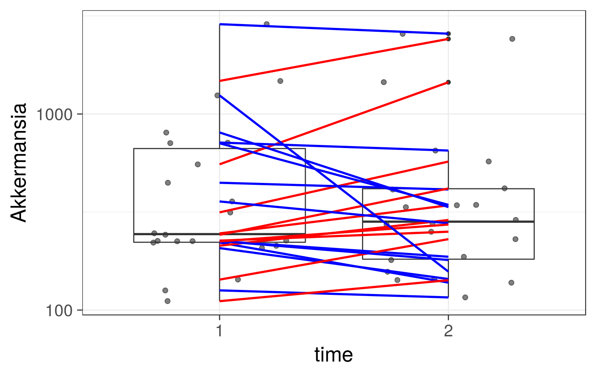

Read more on negative binomials
Load example data:
# Load libraries
library(microbiome)
library(ggplot2)
library(dplyr)
# Probiotics intervention example data
data(peerj32) # Source: https://peerj.com/articles/32/
pseq <- peerj32$phyloseq # Rename the example dataVisually compare Akkermansia abundance between genders
p <- boxplot_abundance(pseq, x = "time", y = "Akkermansia", line = "subject", color = "gender") + scale_y_log10()
print(p)
Test statistical significance with negative binomial:
library(MASS)##
## Attaching package: 'MASS'## The following object is masked from 'package:dplyr':
##
## select# Analyse specific taxa
tax <- "Akkermansia"
# Pick the signal (abundance) for this tax
sample_data(pseq)$signal <- get_sample(pseq, tax)
# Negative binomial test with group and gender included
res <- glm.nb(signal ~ group + gender, data = meta(pseq))
# Show the results
print(coef(summary(res)))## Estimate Std. Error z value Pr(>|z|)
## (Intercept) 6.2487413 0.2240525 27.889627 3.564693e-171
## groupPlacebo 0.3408954 0.2535652 1.344409 1.788161e-01
## gendermale -0.7857536 0.2619740 -2.999358 2.705493e-03